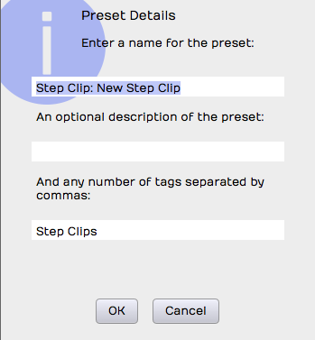

Step Clips¶
At first sight, a Step clip is a MIDI step sequencer: you click cells to turn notes on and off. Step clips go further than that, and you can use them to build drumbeats, synth lines and bass lines.
This tutorial is a good introduction to working with Step clips:
Step Clips Overview¶
Step clips work like a special type of MIDI clip, but the notes sit on a grid where each column is a 'step', a fixed musical increment. By default there are 16 steps, as on many drum machines and step sequencers, so in 4/4 there are four steps per beat. You can change this, but it's a good starting point.
These are the key parts of a Step clip:

Parts of a Step Clip
Step clip: You can add, delete and copy Step clips just like MIDI clips. They are always in loop mode, so you can drag the right trim handle to roll out repetitions. Like MIDI clips, they need a synth plugin to make sound.
Header: Click the Step clip header to select the clip and show its settings in the Actions panel. Drag the header to move the clip earlier or later in time, or to another track. Right-click the header for a menu of the most used options.
Footer: Click the Step clip footer for a menu, and for more options in the Actions panel. These options are for working with variations and pattern sections.
Variation: A variation is a table of rows and columns (steps). It looks like a small spreadsheet: click a cell to trigger a note at that step, and click an active cell again to turn it off. A Step clip can hold any number of variations.
Step: A step is one column of the grid that makes up a variation. A variation is defined by how many steps it has and what each step represents musically. By default a new variation has 16 steps with a step length of 1/4 beat.
Row: Each row plays a single MIDI note. Rows belong to the whole Step clip, so the row assignments are the same for every variation in the clip. You can send rows within one Step clip to different MIDI channels or virtual instruments (see Step Clip Row Actions).
Note: A note is the cell where a step and a row cross. You program a variation by clicking notes to toggle them on or off.
Section: By default, a Step clip has a single pattern section, which holds one variation. To make a longer Step clip, add more pattern sections. Each pattern section is assigned a variation.
Variation number: Variations are numbered within each Step clip. The variation number appears on the footer of each pattern section.

A Step Clip with Four Pattern Sections
💡 Tip: Think of a Step clip as a sequence of pattern sections, each assigned to a variation. You can assign the same variation to more than one pattern section.
📝 Note: A Step clip can contain variations that aren't assigned to any pattern section.
Inserting a Step Clip Into the Edit¶
There are several ways to put a Step clip on a track.
As with every other kind of clip, you can drag the Clip object to a track and choose Insert Step Clip from the menu.

Insert by Dragging the Clip Object
You can also right-click the track at the point where you want the clip and choose Insert Step Clip from the right-click menu.
Or select the track, place the cursor where you want the clip to start, then right-click the track header and choose Insert Step Clip.

Right-click Track Header
From the track's actions: select the track by clicking its name, then in the Actions panel click Insert a New Clip > Insert Step Clip. The Edit's actions also have an Insert new Step clip row, which adds a Step clip to the selected track.

Insert new Step clip in the Edit's actions
Finally, you can drag in a Step clip preset as a starting point. Step clip presets are clip presets, so in the Search tab of the Browser choose Clips under Categories, or search for "Step Clip".

Use a Step Clip Preset from the Browser
Waveform comes with a wide range of Step clip presets.
Programming a Drum Beat with a Step Clip¶
When you insert a new Step clip, its rows are already assigned to General MIDI drum notes, so you can start programming beats straight away.
💡 Tip: Use one of the Waveform drum instruments: Micro Drum Sampler (every edition), or Drum Sampler or Multi Sampler (Waveform Pro, or with the MIDI Producer Expansion or the Synth Pack Expansion). Add the instrument first and load a preset drum kit, then insert a blank Step clip. The row names will match the pad names of the preset.

Default Step Clip
To program a drum beat with a Step clip:
- Insert a drum instrument on a track and select a preset.
- Insert a Step clip on the track.
- Set the In marker and Out marker around the Step clip and turn Loop on.
- Start playback, and click the note cells to turn notes on and off.

Programming a Step Clip
Click a cell to flip it on or off, or drag across cells to paint several. Hold Shift while you click or drag to turn cells on, or hold Cmd / Ctrl to turn them off. Right-click a cell for the pattern section's menu.
Double-click a Step clip to open it in the Detail Editor at the bottom of the window. If Double-click MIDI clip header in Settings > General is set to Expands for in-line editing, a double-click makes the track taller instead, so you can edit the clip in place.
You hear each change as you toggle notes, so you can build the variation while it plays.
Video Clip: This video overview shows how all of this works.
Step Clip Actions¶
A Step clip has a header like those of MIDI clips and Audio clips. Click the header to show all the clip's actions and settings in the Actions panel. These are the most important ones for Step clips:

Click the Header for Step Clip Actions
Name: Give your Step clip a descriptive name. The name is used as the basis for preset names, so it helps when you save the clip as a preset.
Colour: Gives your Step clip its own colour.
Clear All Variations: Clears all the notes from all variations in this Step clip.
⚠️ Warning: Clear All Variations clears every variation, whether you can see it or not. If you change your mind straight away, press Undo (Cmd + Z / Ctrl + Z).
Remove Unused Variations: A Step clip can string together a series of pattern sections, each assigned to a variation. Remove Unused Variations removes any variation that no pattern section uses.
Add a row: Adds a new row at the bottom of the Step clip. You can also insert a row from the right-click menu of the Step clip header or of a row header.
Apply Common Groove: Applies a groove template to every row in the Step clip, usually to add swing. The basic swing templates are the most common choice. You can also set the groove for each row separately (see Step Clip Row Properties). Older templates are in the Legacy groove templates submenu, and Edit groove templates... opens the groove template editor (see Quantising MIDI Notes).
Apply common groove amount: At the minimum, the groove template chosen in Apply Common Groove has no effect. Raise it for a stronger feel.
Speed and Reset Ratio: Speed stretches the patterns and their notes by a ratio, so the clip plays faster or slower than its steps suggest. Reset Ratio puts it back to the default.
MIDI Channel, Velocity and Mute: MIDI Channel sets the MIDI channel for every row in the clip. Velocity scales the velocities of all the notes the clip plays (0-100, where 100 leaves them unchanged). Mute silences the clip.
Add Rows from Instrument: Appears when the track's instrument has named notes, such as a loaded drum kit. It adds a row for each named note.
Render Clip: Use any of the Render Clip options to convert a Step clip to an Audio clip. Each option opens the Render dialog, which puts the result on this track or in place of the clip. See Rendering Clips.
The Actions panel also has the clip operations that every kind of clip shares: Select Clips, Set Edit Tempo, Split Clips and Move Clip.
Convert to MIDI Clip: Converts the selected Step clips to MIDI clips, so you can carry on editing in the MIDI editor's piano roll.
Create Preset: Saves the Step clip (its rows, variations and notes) as a preset. You can find presets by searching in the Browser.
Load Preset: Shows a menu of your Step clip presets. Choose one to apply it to the selected Step clip.
Delete: Deletes the selected Step clip. You can also select the Step clip and press Delete, Backspace or Cmd + X / Ctrl + X.
💡 Tip: Like any other clip, Step clips can be copied (Cmd + C / Ctrl + C), pasted (Cmd + V / Ctrl + V) or duplicated (D).
Right-click the Step clip header for a menu of the most used actions.

Step Clip Header Right-click Menu
📝 Note: A Step clip in a clip launcher slot shows launcher actions (launch quantisation, looping, follow and trigger actions) in place of the start, length and end times. The clip launcher needs Waveform Pro, or the Launcher Expansion.
The Step Clip Footer¶
Clicking the Step clip footer selects that pattern section and its variation. The footer shows the active variation number.

Section Footer Right-click Menu
If a Step clip has more than one pattern section, click a section's footer to select it. Right-click a footer (or click it when the clip is already selected) to open its menu. All of the actions also appear in the Actions panel.

Step Clip Footer Shows Variation & Pattern Section Options
📝 Note: When a footer is selected, the title line of the Actions panel reads "Edit > Pattern", and the Variation row shows which variation that pattern section uses.
Variation Options¶

Variation Options in the Actions Panel
Variation: Sets which variation this pattern section uses. It shows the current one, for example "Variation 2". You can also set this from the footer's right-click menu.
Variation name: An optional name for this variation. The name appears in the variation menus.
Step Length: By default, the step length is a quarter of a beat, so each beat is divided into four steps, giving a 16-step sequencer. Changing it affects this variation only, not the whole Step clip.
Number of Steps: The number of steps in the variation. The default is 16. With a step length of a quarter beat and Number of Steps set to 16, each beat in 4/4 is divided into four steps and the variation is one bar long. This is the most common step sequencer setup.
Select a common setup: Offers preset combinations of Step Length and Number of Steps for one-bar or two-bar variations.

Select a Common Setup in the Actions Panel
Step Clip Variation Actions¶

Variation Actions
Clear All Steps: Turns off every note in the variation, so you can start again.
Randomise Each Step: Randomly turns notes on and off at each step of the variation, which can be a quick source of ideas.
New Variation: Copies the current variation to a new one. The variation number is assigned automatically.
New Blank Variation: Creates a new blank variation and makes it active. The variation number is assigned automatically.
Video Clip: Step Clips Randomise Each Step
📝 Note: You can also randomise a single row of notes (see Step Clip Row Actions).
Step Clip Pattern Section Actions¶
These options are in the Actions panel when a Step clip footer is selected. Some are also in the footer's right-click menu.

Step Clip Section Actions
Add Pattern Section Here: Inserts a new pattern section with a copy of the variation, and pushes any later pattern sections to the right.
Add Pattern Section at End: Adds a new pattern section at the end, with a copy of the variation.
💡 Tip: You choose which variation each pattern section uses. Click the footer and select a variation.

Choosing a Variation for a Pattern Section
Remove this Pattern Section: Select a pattern section by clicking its footer, then choose Remove this Pattern Section from the menu or the Actions panel. This doesn't remove any variations: they're still there and can be assigned to other pattern sections.
Step Clip Row Properties¶
Each row of a Step clip has a name, and a set of actions that change the notes on that row across all the pattern sections. You can send individual rows to separate MIDI channels, or route them to different virtual instruments with Set Destination (see Step Clip Row Actions).

Step Clip Row Properties
These are the properties of a Step clip row:
Note: Sets the row's MIDI note. If you know the note value, enter it here. You can also drag the yellow arrow along the virtual keyboard in the Actions panel to the note you want, and hear each note as you drag.
Velocity: Sets the maximum MIDI velocity for the row. In the Step clip's velocity and gate editor, you can set each note to a percentage of this value. The default Velocity is 96.
Test Note: Click Test Note to hear the row's note on the track's instrument. Clicking the row's name in the clip does the same.
MIDI Channel: Sets the output MIDI channel. With a multi-timbral virtual instrument, this chooses which of its instruments the row plays.
Note on Every: Note on Every is followed by a series of buttons that complete the sentence "Note on every (blank) steps." For example, click 2 for "Note on every 2 steps."
Groove: You can set the groove for a whole Step clip with Apply Common Groove (see Step Clip Actions), or for a single row with Groove. Groove is actually stored per row: applying a common groove sets every row to the same template, and that template then shows here.
Groove Amount: Appears when the row's groove template supports it. At 0 the groove has no effect; raise it for a stronger feel.
📝 Note: Groove is most often used to add swing. Choose Basic 8th Swing or Basic 16th Swing to get started.
Video Clip: Step Clip Groove
Name: The row's name. Row names appear along the left of a Step clip when you hover over it. To rename a row, select it and edit Name in the Actions panel, or right-click the row and choose Rename row. Rows are often named after drum sounds such as "Kick" or "Snare".
Step Clip Row Actions¶
These actions are in the Actions panel when a Step clip row is selected. The main ones are also in the row header's right-click menu.

Step Clip Row Actions
Right-click a row's name in the clip for a menu with Clear row, Randomize row, Rename row, Note on every, Shift left, Shift right, Delete row and Insert row. Each works like the matching action below, across all the pattern sections.
In Waveform Pro, or with the MIDI Producer Expansion, you can also drag a row's name up or down to reorder the rows PRO.
Insert Row: Select a row and click Insert Row to add a new row straight after it. Rows are numbered from the top down, so the rows below are renumbered.
Clear Row: Erases all the notes on that row.
Randomise Row: Randomly turns each step in the row on or off, in the variations of all the pattern sections.
Shift Notes: The left and right arrow buttons after Shift Notes move the row's notes one step left or right per click.
Set Destination: Routes the selected row to a different virtual instrument (its tooltip reads "Automatically route this channel to a plugin"). For example, your bass drum could be played by EZdrummer while your hi-hat is played by Drum Sampler, and a hand clap by another instrument again.
📝 Note: To make this work, Waveform wraps the virtual instruments in a plugin rack. It handles the details for you when you apply Set Destination.
Video Clip: Route Step Clips to Different Synths Video
Deleting a Row¶
Select any row in your Step clip and click Delete Row to remove the whole row. The rows below are renumbered to keep them in order.

Delete Row in the Actions Panel
💡 Tip: If you aren't using all eight default rows, use Delete Row to remove the spare ones and save space on screen. You can add a row again at any time with Insert Row.
Velocity and Gate Editor¶
The velocity and gate editor adds dynamics and feel to your Step clips. Click the V button in the upper left corner of any Step clip and the editor appears below the patterns, showing the velocity of each note on the selected row.
In Waveform Pro, or with the MIDI Producer Expansion, two more buttons sit next to it: P PRO toggles the probability editor, and View PRO (below the row names) chooses which rows to show.

Step Clip Velocity Gate Editor
To use it:
- Click V at the upper corner of the Step clip to toggle the editor. If you don't see it, make the track a little taller until it appears.
-
Select one of the rows in your Step clip by clicking its name. The editor shows the velocity of each note as a bar graph. Click or drag within a velocity bar to adjust its percentage.

Adjusting a Velocity Bar in the Velocity and Gate Editor
📝 Note: The bar height is a percentage of the row's Velocity in the Actions panel. It starts at 100%. To make the notes hit harder, raise the row's Velocity and then adjust the percentages to taste.
-
Drag across the bars to paint velocities for a whole run of notes. This helps on busy rows such as hi-hats or snares. Hold Shift while you drag to change only the velocity, so you don't catch a bar's gate edge by accident.

Adjusting a Series of Velocities with Shift Drag
-
Drag the right side of any velocity bar to narrow it and shorten the note's gate. Hold Opt / Alt to change only the gate. Use this for gated, glitchy notes, or to tighten up the hits.

Adjusting Note Gating in the Velocity and Gate Editor
Hold Cmd / Ctrl while you click or drag to set a velocity on a step that has no note yet, which turns that note on.
Video Clip: Step Clip Velocity/Gate
Probability Editor PRO¶
📝 Edition: Waveform Pro, or with the MIDI Producer Expansion.
The probability editor sets the chance that each note plays, so a pattern can vary every time it loops.
- Click P in the upper left corner of the Step clip. It replaces the velocity and gate editor below the patterns.
- Select a row by clicking its name.
- Click or drag the bars to set each note's chance of playing. A bubble shows the value, for example "Probability: 75%".
Hold Cmd / Ctrl while you click or drag to set a probability on a step that has no note yet, which turns that note on.
Choosing Which Rows to Show¶
Click View below the row names to choose which rows the clip shows: Show all notes, Show notes in key, Show notes in use or Show named notes.

The View Menu
Looping Step Clips¶
Step clips are always in loop mode. Drag the right trim handle at any time to loop the clip over part or all of your song. MIDI clips and Audio clips, by contrast, have a loop mode that you can switch on to roll out repetitions with the right trim handle.

Looping a Step Clip
If your Step clip loops only the last pattern section, enable Repeat Whole Sequence in the Actions panel.

Enable Repeat Whole Sequence
Convert a Step Clip to a MIDI Clip¶
For more detailed editing, convert your Step clip to a MIDI clip and use the MIDI editor. Right-click the Step clip header and choose Convert to MIDI clip. A MIDI clip replaces the Step clip.

Convert a Step Clip to a MIDI Clip
To go the other way, select a MIDI clip and choose Convert to Step Clip in the Actions panel (or Convert to Step clip in its right-click menu), then pick the step size from the menu (for example Quantise to 1/4 beat). This isn't offered for clips in the clip launcher.
Step Clip Presets¶
You can save your Step clips as presets to build a library of sequences for later productions. A preset also works as a template that holds your usual row assignments and names.

Create Preset in the Actions Panel
To save a preset, select the Step clip by clicking its header, then click Create Preset in the Actions panel. This saves the whole clip: its rows, variations and notes. The preset is named "Step Clip: " followed by the clip name, and is tagged "Step Clips". You can change the name and tags in the dialog.

Preset Details Dialog Box for a Step Clip
To use a preset later, select a Step clip and click Load Preset, then choose the preset from the menu. You can also find it in the Search tab of the Browser under Categories > Clips, or search for "Step Clip", and drag it onto a track.
Moving On¶
For detailed note editing, see MIDI Editing. To have Waveform generate MIDI patterns for you, see Pattern Generator.
Video Clips: This tutorial series covers Step clips in more depth: